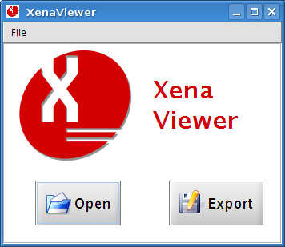
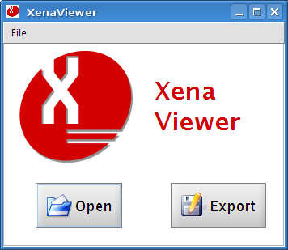

Result: The Xena Viewer main window is displayed.

Result: The file browser window is displayed.
Result: The file is displayed in the Xena Viewer.

Preserved Xena files can be viewed in any application capable of rendering XML. The data of the original file however will still be encoded in Base64 text and therefore be incomprehensible.
The Xena Viewer application is included with Xena, which can reverse the Base64 encoding and present the original data on the screen in a legible form. It also has the option to export the data, which will take it from its preserved form back to the original file (see Exporting Xena Files).
If your operating system has associated .xena files with the Xena Viewer, you can open a file directly from the file manager.
If not, it can be achieved manually:
Result: The Xena Viewer main window is displayed.

Result: The file browser window is displayed.
Result: The file is displayed in the Xena Viewer.
To view a normalised file from within Xena you can either:
Result: The file browser window is displayed.
Result: The file is displayed in the Xena Viewer window (see above).
This option only applies if you view a file immediately after you have completed normalisation.
Result: The following example shows some normalisation results and a JPEG image file that has been selected for viewing.

Result: The file is displayed in the Xena Viewer window (see above).